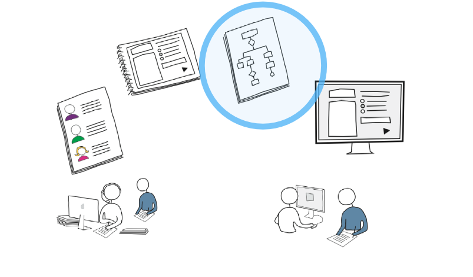
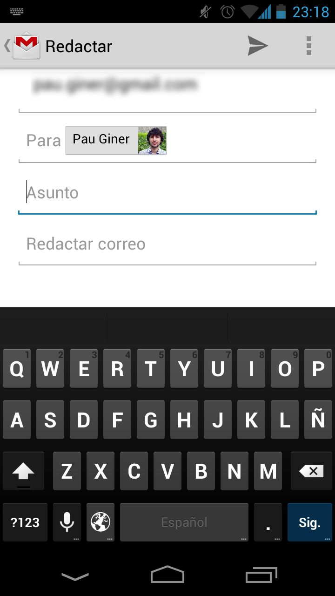
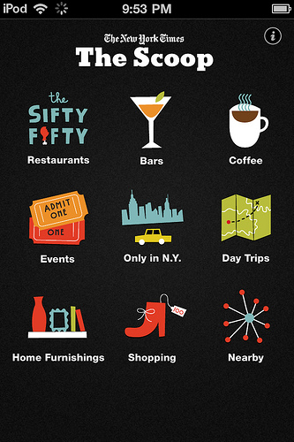
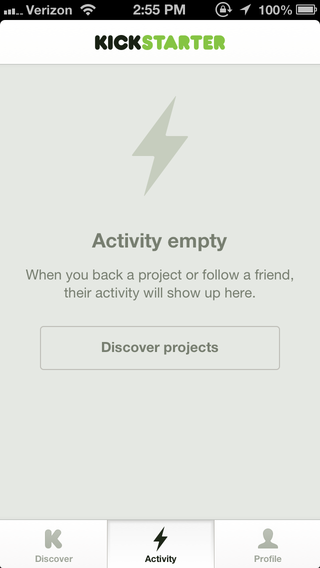
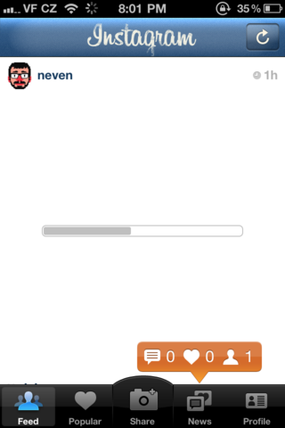

Patrones para el diseño móvil
Experiencia de Usuario en Aplicaciones Móviles
Diseño móvil
Principios y patrones
15 principios para una interacción armónica
y su aplicación al ámbito móvil
1. Sigue los modelos mentales de los usuarios
Plantear la interacción en los términos del usuario
Alineamiento con los comportamientos móviles
Debemos tener en cuenta el patrón de comportamiento que tendrá el usuario:
- Buscar
- Explorar/jugar
- Informar/ser informado
- Editar/crear
Buscar
Urgente
Necesito la información ya (generalmente en el contexto espacio-temporal)
Explorar/jugar
Aburrimiento
Buscar una distracción para pasar el rato
Informar/ser informado (repetición)
Repetición
Crear y seguir la pista de información
Editar/crear
Urgente
Necesito realizar algo ya que no puede esperar
Comunicar con el movimiento


Guiar la atención de usuario
2. Busca la simplicidad
Menos es más
Primar el contenido sobre la navegación
- Reducir la navegación al mínimo
- Llevar al usuario directamente al contenido
Ocultar la navegación en un cajón
Navegación superpuesta
Navegación en otra vista (hub and spoke)
Navegación en otra vista (drill-down)

Navegación filtrada y/o multi-panel

Permitir la navegación lateral
Integrar contenido en la navegación
Evita replicar artefactos analógicos en el mundo digital
3. Permite al usuario tomar el control
Evita opciones invalidas
Evita exponer las interioridades del sistema
Proporciona una alternativa
4. Pon las herramientas al alcance de la mano
Proporcionar la ayuda cuando se necesita
Pon físicamente cerca lo que conceptualmente esté cerca
Cerca = distancia en pantalla + tiempo + ubicación...
Las herramientas más comunes deben ser más prominentes
y no podemos usar el "pasar por encima" (hover)
Mostrar elementos al tocar o deslizar

Puede ser dificil de descubrir: dar pistas o pensar alternativas.
Mostrar en una vista aparte
Evita la sobrecarga de información pero puede complicar la navegación.
Expón funcionalidad específica como widgets
5. Proporcionar feedback no bloqueante
No rompas el flujo de las acciones del usuario
No hagas preguntas absurdas
No pidas permiso si puedes pedir perdón
6. Diseña para lo probable, permite lo posible
El diseño debe optimizarse para resolver las necesidades esenciales
No intentes cubrir todas las posibilidades
El orden de las listas es diferente según el uso habitual
7. Proporciona comparaciones
Proporciona información útil, no datos aislados
Proporciona datos de manera que puedan responder a las preguntas de los usuarios
(mucho, poco, reciente,llega al objetivo...)
8. Permite la manipulación directa
Gestos
Es necesario introducir ayudas (gráficas, textuales, etc.) que permitan descubrir los gestos a realizar o alternativas.
Toque (tap) y doble toque


Arrastrar (drag) y deslizar (swipe)

Ampliar (pinch) y rotar

Y muchos más...

No olvidar la manipulación indirecta
Existen dispositivos y medios de interacción alternativos a los gestos, debemos considerar representaciones alternativas para keypad, etc.
9. Indica el estado de los objetos y la aplicación
Elige el grado de prominencia adecuado
No avisar, avisar, o preguntar

Comunica las esperas
10. Evita la información innecesaria
Haz buen uso del espacio

En un móvil
En un tablet
Patrones para adaptar el contenido
- Tamaño de pantalla
- Rotación
Expandir el area de visión
Estirar el contenido

Mostrar/ocultar elementos
Reubicar

11. Evita hojas en blanco
y los callejones sin salida
Proporciona valores por defecto esperados
Ofrece una salida interesante
Más ejemplos en http://emptystat.es
12. Diferencia entre acción y configuración
Las acciones no deben incluir pasos de configuración
Trata de anticipar las necesidades del usuario
13. Proporciona opciones
Evita las preguntas abiertas
Proporciona ayuda para la entrada de datos
Entrada compacta
Entrada flexible
Entrada específica
Usa controles que ayuden a introducir el tipo de información requerida.
Entrada mínima
Anticipandose a las necesidades de entrada.
14. Esconde los botones peligrosos
Evitar las sorpresas al accionar accidentalmente:
- Cambios radicales en la interfaz
- Aciones irreversibles
Los elementos “tocables” deben ser suficientemente grandes.
7-9mm para la zona activa de los elementos (su representación puede ser menor) y 2mm de separación.
La zona confortable
La zona de acceso confortable es habitualmente la accesible por el pulgar derecho.
15. Optimiza el tiempo de respuesta
Intenta que no parezca lento
Comunica la espera
Evita bloquear la interfaz
Usa transiciones
Permite reanudar en el punto dónde te quedaste
Actividad: Revisa tus diseños
Comprueba que siguen los principios marcados y aplica algunos de los patrones si no lo hacen.
(Puedes encontrar más patrones en la sección de "material relacionado")